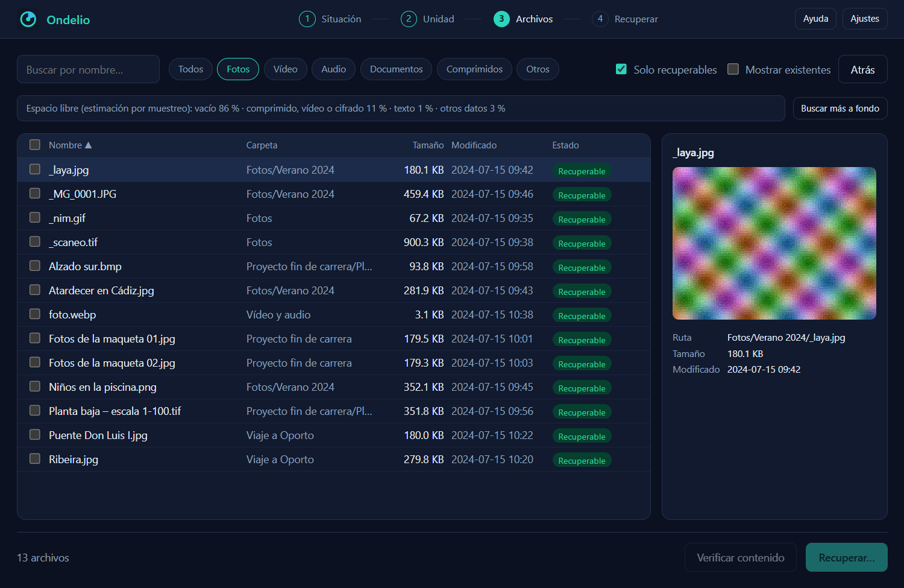

Recupera lo que creías perdido.
Ondelio encuentra tus archivos borrados en discos, pendrives y tarjetas de memoria, te dice con honestidad cuáles se pueden recuperar enteros y nunca escribe en el disco que estás rescatando.
- Gratis para analizar
- Solo lectura
- 100 % en tu equipo
- Windows 10 y 11

Tres pasos. Sin tecnicismos.
Dile a Ondelio qué te ha pasado y él decide cómo buscar. Tú solo eliges qué quieres recuperar.
Cuéntale qué pasó
Borré archivos, formateé, el disco falla, mi pendrive no se abre, tengo un archivo dañado… Primero mira gratis en la papelera, las versiones anteriores y la nube.
Mira antes de pagar
Ves todo lo que se puede recuperar, con vista previa y un veredicto por archivo: íntegro, dudoso o dañado. Sin sorpresas.
Recupera sin riesgos
Lo recuperado se guarda en otra unidad, nunca en la que analizas. Si el disco falla, primero se copia y se trabaja sobre la copia.
Lo que te ha pasado, resuelto.
Borré archivos sin querer
Con Mayús+Supr o vaciando la papelera.
Mi pendrive pide formatear
O aparece como «RAW» y no se abre.
Perdí las fotos de la cámara
Tarjetas SD, microSD y fotos RAW.
Formateé el disco
O reinstalé Windows por encima.
El disco hace ruido o va lento
Se copia primero, sin forzarlo.
El vídeo del móvil no se abre
Se cortó al grabar o está dañado.
Una sola aplicación. Todo lo que necesitas.
Recuperar, reparar, copiar y borrar, con el mismo cuidado por tus datos.
Antes de escanear, mira aquí
Muchos archivos «perdidos» siguen existiendo. En segundos, Ondelio revisa los sitios donde Windows guarda copias. Si lo encuentras ahí, restaurarlo es gratis.
- Papelera y versiones anteriores de Windows
- Historial de archivos y Windows.old
- OneDrive, Google Drive y Dropbox

Recupera archivos borrados
Papelera vaciada, unidad formateada o partición perdida. Con vista previa antes de recuperar y un veredicto honesto para cada archivo.
- NTFS, FAT y exFAT
- Rescate por contenido de más de 20 formatos
- Fotos, documentos, vídeos, música y comprimidos

Copia un disco que está fallando
Cuando un disco empieza a fallar, cada lectura cuenta. Ondelio hace primero una copia exacta y después recuperas desde la copia, sin forzar el disco.
- Salta las zonas dañadas y vuelve a ellas después
- Pausa y reanuda donde lo dejaste
- Copia comprobada con su huella SHA-256

Repara archivos dañados
El diagnóstico es gratis y te dice qué se conservaría y qué no. El original nunca se toca: siempre se guarda una copia reparada.
- Fotos JPEG y PNG
- Word, Excel, PowerPoint y ZIP
- Vídeos MP4 y MOV, incluidos los del móvil cortados al grabar

Borra para siempre, de verdad
Sobrescribe archivos, carpetas o el espacio libre y lo comprueba volviendo a leerlo. Con un informe de borrado que te dice la verdad, también cuando un borrado no se puede verificar.
- Archivos, carpetas y espacio libre
- Verificación por relectura
- Aviso claro en SSD y pendrives

Ondelio Sense
Un modelo de inteligencia artificial que vive dentro del programa y reconoce de qué tipo es cada fragmento del disco: texto, foto, datos comprimidos o programa. Así encuentra y ordena mejor lo que buscas, incluso cuando ya no queda rastro del sistema de archivos.
Y lo que viene.
Salud del disco
Te avisa si el disco está fallando antes de analizarlo y te propone copiarlo primero.
PróximamenteModo forense
Casos y cadena de custodia, imágenes E01, línea de tiempo, rastros de Windows e informe pericial.
PróximamenteDocumento sin guardar
Encuentra las copias que guardan Office y Windows cuando un programa se cierra sin guardar.
PróximamenteOndelio Guard
Protección preventiva opcional para que una recuperación futura sea mucho más completa.
PróximamenteGratis para comprobar. De pago para el resultado.
Nunca cobramos por lo que evita que pierdas datos. Ves qué se puede recuperar antes de pagar nada.
Para comprobar qué se puede salvar y resolver lo más habitual.
- Analizar y ver la vista previa
- Recuperar hasta 500 MB en total
- «Mira aquí»: papelera, versiones anteriores y nube
- Copiar un disco a una imagen
- Diagnosticar archivos dañados
- Borrado seguro de archivos y espacio libre
Todo lo gratuito, sin límites, y las herramientas avanzadas.
- Recuperar sin límite
- Guardar los archivos reparados
- Copiar de disco a disco
- Borrar discos completos
- Modo forense
Los precios se mostrarán en Microsoft Store en tu moneda, con los impuestos incluidos. Pago seguro gestionado por Microsoft. Consulta las condiciones de pago y la política de reembolsos.
Lo que ningún programa puede hacer.
Preferimos decírtelo antes que venderte algo imposible.
Datos sobrescritos
Si algo nuevo se guardó encima, lo anterior ya no existe. Deja de usar la unidad en cuanto notes la pérdida.
SSD con TRIM
En la mayoría de los SSD modernos, lo borrado se vacía en poco tiempo. Ondelio te lo dice antes de analizar.
Cifrado sin la clave
Sin la contraseña o la clave de recuperación, los datos cifrados no se pueden leer. Es su razón de ser.
Resolvemos tus dudas.
¿Puedo ver qué se puede recuperar antes de pagar?
Sí. Analizar y ver la vista previa es gratis, y puedes recuperar hasta 500 MB gratis para comprobar que funciona.
¿Ondelio puede estropear mi disco?
Al recuperar, no: el disco que analizas se abre en solo lectura y lo recuperado nunca se guarda en esa misma unidad. Solo copiar de disco a disco y borrar un disco escriben, siempre sobre otro disco que confirmas escribiendo un texto, y nunca sobre el disco del sistema.
¿Por qué no aparece lo que borré de un SSD?
En la mayoría de los SSD modernos, Windows avisa al disco al borrar (TRIM) y el disco vacía esas zonas en poco tiempo. Es una limitación física, no del programa, y Ondelio te lo dice antes de analizar. Prueba antes «Mira aquí»: la papelera, las versiones anteriores o la nube pueden tenerlo.
¿Mis archivos salen de mi ordenador?
No. Todo ocurre en tu equipo, sin conexión. Ondelio no sube archivos, no tiene telemetría y no lleva publicidad.
¿Qué es Ondelio Sense?
Un pequeño modelo de inteligencia artificial que funciona dentro del programa, sin conexión, y reconoce de qué tipo es cada fragmento del disco. Se entrenó solo con archivos públicos con licencia y no aprende de tus archivos.
¿Puede recuperar fotos de una tarjeta de cámara o un pendrive?
Sí: tarjetas SD y microSD, pendrives y discos externos con FAT, exFAT o NTFS, también formateados o que Windows pide formatear.
¿Qué sistemas admite?
Windows 10 y Windows 11 de 64 bits. Discos y particiones NTFS, FAT y exFAT, pendrives, tarjetas de memoria e imágenes de disco.
¿Cómo se paga?
A través de Microsoft Store, con tu cuenta Microsoft. Nosotros nunca vemos tus datos de pago. Consulta las condiciones de pago y la política de reembolsos.
Tus archivos merecen una segunda oportunidad.
Ondelio llegará muy pronto a Microsoft Store para Windows 10 y 11. Gratis para analizar y comprobar qué se puede recuperar.